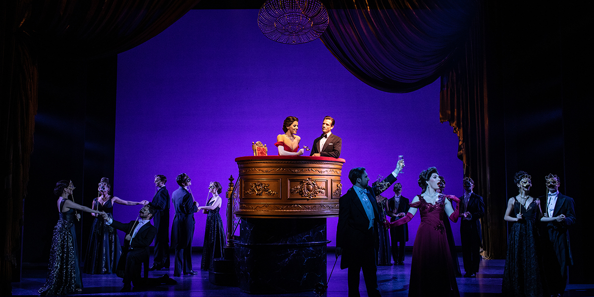

Founded in February 2001 as the 'Lavender Hill Mob Drama Club', we later decided that, because we offered more than just drama, it was necessary to rebrand ourselves as the 'Lavender Hill Mob Theatre Company'. As a team we are highly committed to providing an outstanding service to the community and all involved within the Company.
Founder Les Miles was a member of the Chicken Shed Theatre Company in North London, where she achieved a BTEC National Diploma in Performing Arts. Having three years' experience and gaining many qualifications as a Learning Support Assistant, and ten years as a qualified registered Child Minder, she brings her own and part of the Chicken Shed's ethos - everyone is included. In 2002, Tim Rock joined as Musical Director. Tim is a qualified teacher, gaining a first-class honours degree in Music, along with a PGCE in Secondary Education. He's been a professional musician and teacher for over 20 years.
Over the years, we have built up a solid reputation for quality and integrity. This can only be achieved and maintained by the qualified and committed volunteers we have at LHMTC. Some of whom (along with our Artistic Director) have also achieved qualifications and invaluable experience at the Chicken Shed Theatre Company.
We are an inclusive theatre company. This means that everyone is welcome no matter their ability, and no audition is necessary. Everyone is respected, valued, and encouraged to take part - no matter how small their contribution is.
Most of our material is original, giving everyone a chance to pursue their own talents or to develop skills that some didn't think they had. Some of our members choose not to act, dance, or sing, but instead take an interest in the more technical side of the Theatre, which can be as equally challenging as performing on the stage. You don't need to be an actor to act, a singer to sing, or a dancer to dance!
Each member of the group respects one another and is taught that everyone has a gift of some sort. All our performances include sign language (BSL) where appropriate. Moreover, our older members are encouraged to do extra training, such as first aid or learning sign language, in order to teach the younger members. Our members are split up into groups. Each group has Team Leaders to assist the Directors and help encourage the more challenging members, stimulating the learning environment.
There are three fundamental rules of the LHMTC, which form the basis of all our members:
Many members who take safe and enjoyment time with us (some of whom have learning/behavioural issues) are found to be shy and withdrawn, but joining in brings out the best in them. The LHMTC gives the opportunity to assist and support them, developing their social skills. Each member is encouraged to do the best they can, and no-one is pressured into doing something they do not wish to do. Our members look forward to the weekly workshops and, depending on their age, can also attend other evenings where they can write their own short plays/scripts and learn all aspects of theatre, including the Hudson Voice Technique.
Indeed, we are very pro-active in encouraging our members to contribute to our shows. For example, our original scripts (for Pantomines, as well as more serious performances) rather than being 'set in stone' from the beginning, are very 'organic' with members being encouraged to experiment and develop ideas which adds to the family atmosphere, the cohesive nature of the group, and makes the learning process for shows so much more enjoyable!
Workshops are now running every Tuesday evening 5-8pm
EXCEPT the 2nd Tuesday of the month
New members are always welcome, whatever your age or ability
All you need is bags of enthusiasm and a sense of fun!